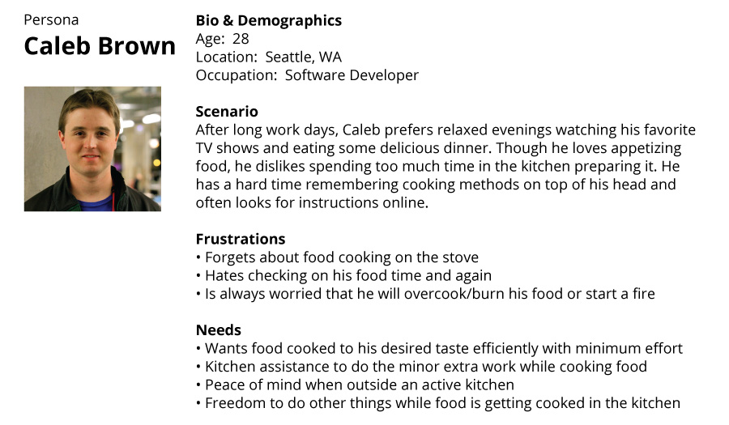
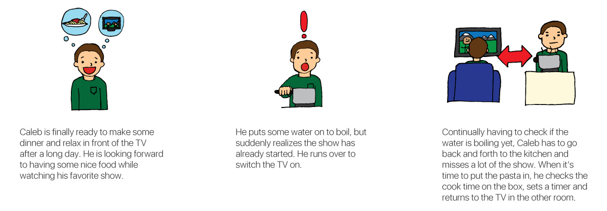
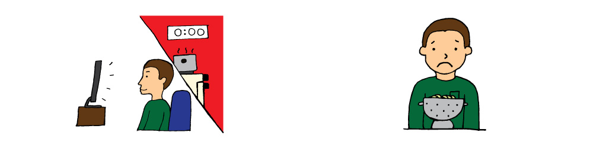

Client: OrbSense
Duration: Three Week Sprint
Team: Ameeta Dalvi and Christopher J Lewis
My Role: screener and interview script writing, interviews, affinity diagramming, persona creation, sketching, storyboarding, wireframes, user interface design, icon and illustration design, rapid prototyping, usability testing
Tools: POP, Sketch, Invision, Omnigraffle, Illustrator
OrbSense is a technology startup specializing in IOT (Internet of Things) products. Their first product, Cluck, is a smart kitchen timer that connects to a phone or tablet application and helps people boil food. Cluck does a very good job of helping boil eggs, OrbSense is looking to implement a number of new features including:
First, my team did organizational and domain research. While there are many kitchen devices that help people with timing and temperature measurement, Cluck is the only smart device that can be put into a pot to measure water temperature while boiling foods.
From the 25 interview screeners we sent out, 17 interview candidates were found. From those interviews, the design team and I made an affinity diagram to find common trends in the data. That data was then used to make the persona we would be designing the app for.
Caleb Brown, the primary persona, was made from our interview data and affinity diagraming.
Next I created a scenario for Caleb. This shows the problems he is currently having with his pasta cooking process, which I later illustrated.
 One of the largest challenges of this project was finding a way to sort pastas in a way that users can easily understand. The number of different types of pasta is almost limitless. We conducted a card sorting exercise to help us see how users thought pastas would be sorted. From our findings, we found that most people sorted pasta by shape and size. While this sounds like a simple solution, the cook times of pastas with similar shapes can vary wildly. Two ways of finding pasta cook times were made to better server the needs of the user.
During the three week sprint, the user interface went through multiple rounds of iterations based on user testing. The team worked together on the initial design. These sketches were then made into a paper prototype that was put into POP for user testing.
Once testing of the first prototype was complete, a digital prototype made using Illustrator, Sketch and Invision. I was in charge of making most of the graphics, icons, and making the prototype’s visuals consistent throughout all pages.
Three rounds of testing were done for this project. These tests were done on the the current app using the cluck device, the paper prototype and the high-fidelity prototype. The number of tests done are as follows:
In these tests, we tried to solve for a number of key areas that continually arose:
Further usability testing will be needed once the new app changes are implemented.
Further development of the feedback system that helps the app improve is necessary. Having the app be able to learn and/or improve is very important to the people we have tested.